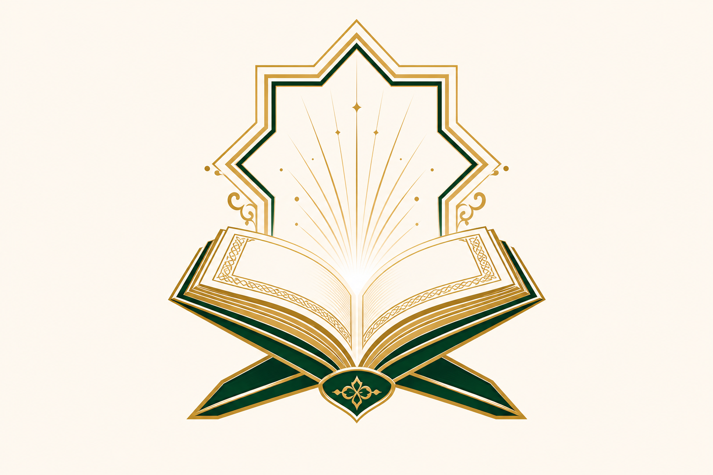

أكاديمية آيات البيان
رتّل بوعي، واحفظ بإتقان
الرئيسية
الجدول
التقارير
حسابي
يوسف
3
الإشعارات
مواعيد الحلقات والتقارير الجديدة وتنبيهات الباقة في مكان واحد.
3
غير مقروءة
تعليم الكل كمقروء
اليوم
غير مقروء:
حلقة يوسف تبدأ بعد 10 دقائق
اضغط للدخول إلى الحلقة
15 نوفمبر، 6:20 م
غير مقروء:
تقرير جديد لمريم
حلقة الأربعاء 12 نوفمبر · جيد جدًا
15 نوفمبر، 11:05 ص
أمس
غير مقروء:
تغيّر موعد حلقة مريم
أصبحت الأحد 16 نوفمبر الساعة 5:00 م
14 نوفمبر، 4:30 م
باقة يوسف: بقيت 4 حلقات
تتجدد 1 ديسمبر ·
المستحق 250 ر.س
14 نوفمبر، 9:00 ص
هذا الأسبوع
تقرير جديد ليوسف
حلقة الخميس 13 نوفمبر
13 نوفمبر، 7:40 م
أقدم
أُلغيت حلقة يوسف يوم الثلاثاء 4 نوفمبر
بناءً على اعتذاركم المسبق
3 نوفمبر، 8:15 م